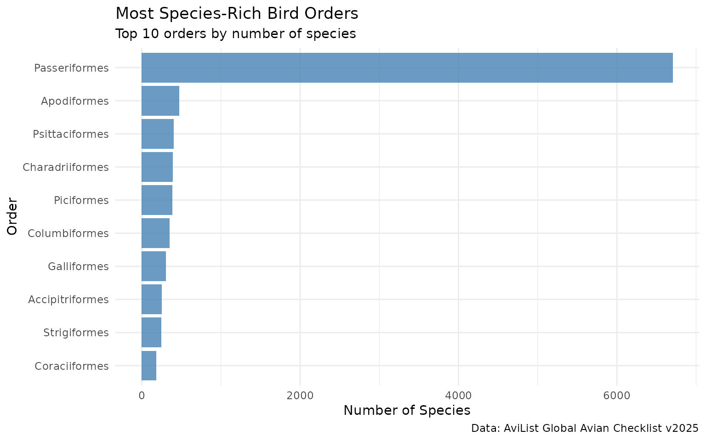
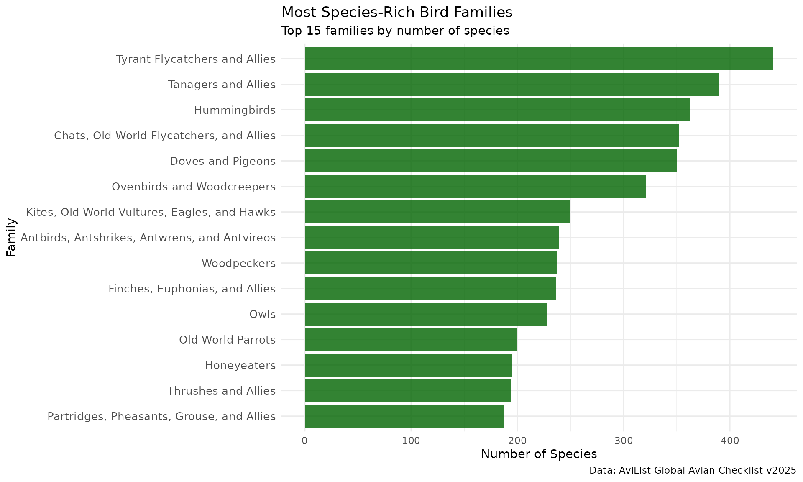

Introduction
The avilistr package provides access to the AviList
Global Avian Checklist, the first unified global bird taxonomy. This
vignette demonstrates how to work with the data for common
ornithological and biodiversity analyses.
library(avilistr)
library(dplyr)
#>
#> Attaching package: 'dplyr'
#> The following objects are masked from 'package:stats':
#>
#> filter, lag
#> The following objects are masked from 'package:base':
#>
#> intersect, setdiff, setequal, union
library(ggplot2)
library(tidyverse)
#> ── Attaching core tidyverse packages ──────────────────────── tidyverse 2.0.0 ──
#> ✔ forcats 1.0.0 ✔ stringr 1.5.1
#> ✔ lubridate 1.9.4 ✔ tibble 3.3.0
#> ✔ purrr 1.0.4 ✔ tidyr 1.3.1
#> ✔ readr 2.1.5
#> ── Conflicts ────────────────────────────────────────── tidyverse_conflicts() ──
#> ✖ dplyr::filter() masks stats::filter()
#> ✖ dplyr::lag() masks stats::lag()
#> ℹ Use the conflicted package (<http://conflicted.r-lib.org/>) to force all conflicts to become errorsLoading the Data
The package provides three main datasets:
# Load the datasets
data(avilist_2025) # Complete dataset (26 fields)
data(avilist_2025_short) # Essential fields (~12 fields)
data(avilist_metadata) # Field descriptions
# Check data dimensions
cat("Full dataset:", nrow(avilist_2025), "records,", ncol(avilist_2025), "fields\n")
#> Full dataset: 33684 records, 26 fields
cat("Short dataset:", nrow(avilist_2025_short), "records,", ncol(avilist_2025_short), "fields\n")
#> Short dataset: 33684 records, 14 fieldsBasic Data Exploration
Taxonomic Diversity
# Count species by order (top 10)
species_by_order <- avilist_2025_short %>%
filter(Taxon_rank == "species") %>%
count(Order, sort = TRUE) %>%
head(10)
print(species_by_order)
#> # A tibble: 10 × 2
#> Order n
#> <chr> <int>
#> 1 Passeriformes 6705
#> 2 Apodiformes 472
#> 3 Psittaciformes 406
#> 4 Charadriiformes 392
#> 5 Piciformes 385
#> 6 Columbiformes 350
#> 7 Galliformes 307
#> 8 Accipitriformes 252
#> 9 Strigiformes 245
#> 10 Coraciiformes 185
# Visualize most diverse orders
ggplot(species_by_order, aes(x = reorder(Order, n), y = n)) +
geom_col(fill = "steelblue", alpha = 0.8) +
coord_flip() +
labs(
title = "Most Species-Rich Bird Orders",
subtitle = "Top 10 orders by number of species",
x = "Order",
y = "Number of Species",
caption = "Data: AviList Global Avian Checklist v2025"
) +
theme_minimal()
Family-Level Diversity
# Most diverse bird families
family_richness <- avilist_2025_short %>%
filter(Taxon_rank == "species") %>%
count(Family, Family_English_name, sort = TRUE) %>%
head(15)
print(family_richness)
#> # A tibble: 15 × 3
#> Family Family_English_name n
#> <chr> <chr> <int>
#> 1 Tyrannidae Tyrant Flycatchers and Allies 441
#> 2 Thraupidae Tanagers and Allies 390
#> 3 Trochilidae Hummingbirds 363
#> 4 Muscicapidae Chats, Old World Flycatchers, and Allies 352
#> 5 Columbidae Doves and Pigeons 350
#> 6 Furnariidae Ovenbirds and Woodcreepers 321
#> 7 Accipitridae Kites, Old World Vultures, Eagles, and Hawks 250
#> 8 Thamnophilidae Antbirds, Antshrikes, Antwrens, and Antvireos 239
#> 9 Picidae Woodpeckers 237
#> 10 Fringillidae Finches, Euphonias, and Allies 236
#> 11 Strigidae Owls 228
#> 12 Psittaculidae Old World Parrots 200
#> 13 Meliphagidae Honeyeaters 195
#> 14 Turdidae Thrushes and Allies 194
#> 15 Phasianidae Partridges, Pheasants, Grouse, and Allies 187
# Visualize family diversity
ggplot(family_richness, aes(x = reorder(Family_English_name, n), y = n)) +
geom_col(fill = "darkgreen", alpha = 0.8) +
coord_flip() +
labs(
title = "Most Species-Rich Bird Families",
subtitle = "Top 15 families by number of species",
x = "Family",
y = "Number of Species",
caption = "Data: AviList Global Avian Checklist v2025"
) +
theme_minimal() +
theme(axis.text.y = element_text(size = 10))
Species Search and Filtering
Finding Specific Groups
# Get all thrush species
thrushes <- avilist_2025_short %>%
filter(Family == "Turdidae", Taxon_rank == "species") %>%
select(Scientific_name, English_name_AviList)
cat("Number of thrush species:", nrow(thrushes), "\n")
#> Number of thrush species: 194
head(thrushes)
#> # A tibble: 6 × 2
#> Scientific_name English_name_AviList
#> <chr> <chr>
#> 1 Grandala coelicolor Grandala
#> 2 Sialia sialis Eastern Bluebird
#> 3 Sialia mexicana Western Bluebird
#> 4 Sialia currucoides Mountain Bluebird
#> 5 Pinarornis plumosus Boulder Chat
#> 6 Stizorhina finschi Finsch's Rufous Thrush
# Get all raptors (birds of prey)
raptor_families <- c("Accipitridae", "Falconidae", "Strigidae", "Tytonidae")
raptors <- avilist_2025_short %>%
filter(Family %in% raptor_families, Taxon_rank == "species") %>%
count(Family, Family_English_name, sort = TRUE)
print(raptors)
#> # A tibble: 4 × 3
#> Family Family_English_name n
#> <chr> <chr> <int>
#> 1 Accipitridae Kites, Old World Vultures, Eagles, and Hawks 250
#> 2 Strigidae Owls 228
#> 3 Falconidae Falcons and Caracaras 65
#> 4 Tytonidae Bay Owls and Barn Owls 17Pattern Matching
# Find species with "Robin" in their name
robins <- avilist_2025_short %>%
filter(str_detect(English_name_AviList, "Robin"), Taxon_rank == "species") %>%
select(Scientific_name, English_name_AviList, Family) %>%
arrange(Family)
print(robins)
#> # A tibble: 100 × 3
#> Scientific_name English_name_AviList Family
#> <chr> <chr> <chr>
#> 1 Tychaedon coryphoeus Karoo Scrub Robin Muscicapidae
#> 2 Tychaedon leucosticta Forest Scrub Robin Muscicapidae
#> 3 Tychaedon signata Brown Scrub Robin Muscicapidae
#> 4 Tychaedon quadrivirgata Bearded Scrub Robin Muscicapidae
#> 5 Tychaedon barbata Miombo Scrub Robin Muscicapidae
#> 6 Cercotrichas podobe Black Scrub Robin Muscicapidae
#> 7 Cercotrichas galactotes Rufous-tailed Scrub Robin Muscicapidae
#> 8 Cercotrichas paena Kalahari Scrub Robin Muscicapidae
#> 9 Cercotrichas hartlaubi Brown-backed Scrub Robin Muscicapidae
#> 10 Cercotrichas leucophrys White-browed Scrub Robin Muscicapidae
#> # ℹ 90 more rows
# Explore a specific genus (Turdus)
turdus_species <- avilist_2025_short %>%
filter(str_detect(Scientific_name, "^Turdus "), Taxon_rank == "species") %>%
select(Scientific_name, English_name_AviList) %>%
arrange(Scientific_name)
cat("Number of Turdus species:", nrow(turdus_species), "\n")
#> Number of Turdus species: 105
head(turdus_species, 10)
#> # A tibble: 10 × 2
#> Scientific_name English_name_AviList
#> <chr> <chr>
#> 1 Turdus abyssinicus Abyssinian Thrush
#> 2 Turdus albicollis White-necked Thrush
#> 3 Turdus albocinctus White-collared Blackbird
#> 4 Turdus amaurochalinus Creamy-bellied Thrush
#> 5 Turdus ardosiaceus Eastern Red-legged Thrush
#> 6 Turdus arthuri Campina Thrush
#> 7 Turdus assimilis White-throated Thrush
#> 8 Turdus atrogularis Black-throated Thrush
#> 9 Turdus aurantius White-chinned Thrush
#> 10 Turdus bewsheri Comoro ThrushData Quality and Validation
Checking Data Completeness
# Summary of data completeness
data_completeness <- avilist_2025 %>%
summarise(
total_records = n(),
missing_scientific_names = sum(is.na(Scientific_name)),
missing_families = sum(is.na(Family)),
missing_orders = sum(is.na(Order)),
missing_avilist_names = sum(is.na(English_name_AviList))
)
print(data_completeness)
#> # A tibble: 1 × 5
#> total_records missing_scientific_names missing_families missing_orders
#> <int> <int> <int> <int>
#> 1 33684 0 46 0
#> # ℹ 1 more variable: missing_avilist_names <int>Comparing Name Sources
# Compare AviList vs Clements naming
name_comparison <- avilist_2025 %>%
filter(Taxon_rank == "species") %>%
summarise(
total_species = n(),
has_avilist_name = sum(!is.na(English_name_AviList)),
has_clements_name = sum(!is.na(English_name_Clements_v2024)),
has_both_names = sum(!is.na(English_name_AviList) & !is.na(English_name_Clements_v2024)),
names_differ = sum(English_name_AviList != English_name_Clements_v2024, na.rm = TRUE)
)
print(name_comparison)
#> # A tibble: 1 × 5
#> total_species has_avilist_name has_clements_name has_both_names names_differ
#> <int> <int> <int> <int> <int>
#> 1 11131 11131 11026 11026 1906
# Examples where names differ between sources
name_differences <- avilist_2025 %>%
filter(
Taxon_rank == "species",
!is.na(English_name_AviList),
!is.na(English_name_Clements_v2024),
English_name_AviList != English_name_Clements_v2024
) %>%
select(Scientific_name, English_name_AviList, English_name_Clements_v2024) %>%
head(10)
print(name_differences)
#> # A tibble: 10 × 3
#> Scientific_name English_name_AviList English_name_Clements_v…¹
#> <chr> <chr> <chr>
#> 1 Apteryx rowi Okarito Kiwi Okarito Brown Kiwi
#> 2 Eudromia formosa Quebracho Crested Tinamou Quebracho Crested-Tinamou
#> 3 Eudromia elegans Elegant Crested Tinamou Elegant Crested-Tinamou
#> 4 Tinamus tao Grey Tinamou Gray Tinamou
#> 5 Crypturellus duidae Grey-legged Tinamou Gray-legged Tinamou
#> 6 Dendrocygna guttata Spotted Whistling Duck Spotted Whistling-Duck
#> 7 Dendrocygna eytoni Plumed Whistling Duck Plumed Whistling-Duck
#> 8 Dendrocygna viduata White-faced Whistling Duck White-faced Whistling-Du…
#> 9 Dendrocygna autumnalis Black-bellied Whistling Duck Black-bellied Whistling-…
#> 10 Dendrocygna arborea West Indian Whistling Duck West Indian Whistling-Du…
#> # ℹ abbreviated name: ¹English_name_Clements_v2024Working with Performance
Memory and Speed Considerations
# For large analyses, use the short dataset when possible
system.time({
short_analysis <- avilist_2025_short %>%
filter(Taxon_rank == "species") %>%
count(Order)
})
#> user system elapsed
#> 0.006 0.000 0.006
# Filter early to reduce data size
songbirds <- avilist_2025_short %>%
filter(Order == "Passeriformes", Taxon_rank == "species")
cat("Songbird species:", nrow(songbirds), "\n")
#> Songbird species: 6705
# Select only needed columns to reduce memory usage
essential_fields <- avilist_2025 %>%
select(Scientific_name, English_name_AviList, Family, Order, Taxon_rank)
cat("Memory usage reduced from", ncol(avilist_2025), "to", ncol(essential_fields), "columns\n")
#> Memory usage reduced from 26 to 5 columnsIntegration with Other R Packages
Using with taxize
library(taxize)
# Get a sample of species for validation
sample_species <- avilist_2025_short %>%
filter(Family == "Turdidae", Taxon_rank == "species") %>%
pull(Scientific_name) %>%
head(5)
# Validate names with GBIF (commented out to avoid API calls in vignette)
# gbif_validation <- get_gbifid(sample_species)Using with rebird for eBird Integration
library(rebird)
# Get Cornell Lab species codes from full dataset
thrush_codes <- avilist_2025 %>%
filter(Family == "Turdidae", Taxon_rank == "species") %>%
select(Scientific_name, Species_code_Cornell_Lab) %>%
filter(!is.na(Species_code_Cornell_Lab))
# Example: Get recent observations (commented out to avoid API calls)
# recent_thrushes <- ebirdregion("US-NY", species = thrush_codes$Species_code_Cornell_Lab[1])Advanced Analyses
Taxonomic Patterns
# Find monotypic genera (genera with only one species)
monotypic_genera <- avilist_2025_short %>%
filter(Taxon_rank == "species") %>%
mutate(genus = str_extract(Scientific_name, "^[A-Z][a-z]+")) %>%
count(genus, Family) %>%
filter(n == 1) %>%
arrange(Family)
cat("Number of monotypic genera:", nrow(monotypic_genera), "\n")
#> Number of monotypic genera: 890
# Genera per family
monotypic_summary <- monotypic_genera %>%
count(Family, name = "monotypic_genera") %>%
arrange(desc(monotypic_genera)) %>%
head(10)
print(monotypic_summary)
#> # A tibble: 10 × 2
#> Family monotypic_genera
#> <chr> <int>
#> 1 Thraupidae 48
#> 2 Trochilidae 40
#> 3 Accipitridae 37
#> 4 Tyrannidae 35
#> 5 Anatidae 32
#> 6 Furnariidae 28
#> 7 Thamnophilidae 26
#> 8 Fringillidae 21
#> 9 Meliphagidae 20
#> 10 Sturnidae 20Geographic Patterns (using Type Locality)
# Analyze type localities (where species were first described)
type_localities <- avilist_2025 %>%
filter(Taxon_rank == "species", !is.na(Type_locality)) %>%
mutate(
continent = case_when(
str_detect(Type_locality, regex("Australia|New Zealand", ignore_case = TRUE)) ~ "Australasia",
str_detect(Type_locality, regex("Europe|European", ignore_case = TRUE)) ~ "Europe",
str_detect(Type_locality, regex("Africa|African", ignore_case = TRUE)) ~ "Africa",
str_detect(Type_locality, regex("Asia|Asian|China|Japan|India", ignore_case = TRUE)) ~ "Asia",
str_detect(Type_locality, regex("America|Brazil|Peru|Mexico|Canada|USA", ignore_case = TRUE)) ~ "Americas",
TRUE ~ "Other"
)
) %>%
count(continent, sort = TRUE)
print(type_localities)
#> # A tibble: 6 × 2
#> continent n
#> <chr> <int>
#> 1 Other 8233
#> 2 Americas 1459
#> 3 Asia 411
#> 4 Australasia 263
#> 5 Africa 257
#> 6 Europe 145Exploring Field Metadata
# Understand the available fields
print(avilist_metadata)
#> # A tibble: 26 × 6
#> field_name in_full_version in_short_version description data_type source
#> <chr> <lgl> <lgl> <chr> <chr> <chr>
#> 1 Authority TRUE TRUE Author and… character AviLi…
#> 2 AvibaseID TRUE TRUE Avibase da… character Aviba…
#> 3 Bibliographic_… TRUE TRUE Bibliograp… character AviLi…
#> 4 BirdLife_DataZ… TRUE FALSE BirdLife D… characte… BirdL…
#> 5 Birds_of_the_W… TRUE FALSE Birds of t… characte… Corne…
#> 6 Decision_summa… TRUE TRUE Data field… character AviLi…
#> 7 English_name_A… TRUE TRUE English co… character AviLi…
#> 8 English_name_B… TRUE FALSE Name field… character BirdL…
#> 9 English_name_C… TRUE FALSE English co… character Cleme…
#> 10 Extinct_or_pos… TRUE TRUE Data field… character AviLi…
#> # ℹ 16 more rows
# Fields available in short vs full dataset
cat("Fields in short dataset:\n")
#> Fields in short dataset:
short_fields <- avilist_metadata %>%
filter(in_short_version) %>%
pull(field_name)
cat(paste(short_fields, collapse = ", "), "\n\n")
#> Authority, AvibaseID, Bibliographic_details, Decision_summary, English_name_AviList, Extinct_or_possibly_extinct, Family, Family_English_name, IUCN_Red_List_Category, Order, Range, Scientific_name, Sequence, Taxon_rank
cat("Additional fields in full dataset:\n")
#> Additional fields in full dataset:
full_only_fields <- avilist_metadata %>%
filter(in_full_version & !in_short_version) %>%
pull(field_name)
cat(paste(full_only_fields, collapse = ", "), "\n")
#> BirdLife_DataZone_URL, Birds_of_the_World_URL, English_name_BirdLife_v9, English_name_Clements_v2024, Gender_of_genus, Original_description_URL, Proposal_number, Protonym, Species_code_Cornell_Lab, Title_of_original_description, Type_locality, Type_species_of_genusSummary
The avilistr package provides comprehensive access to
the unified AviList Global Avian Checklist. Key takeaways:
- Use the short dataset for most analyses to improve performance
- Filter early in your analysis pipeline to reduce memory usage
- Leverage the metadata to understand field contents and sources
-
Integrate with other packages like
taxizeandrebirdfor enhanced functionality - Take advantage of the unified taxonomy to avoid conflicts between different checklist authorities
For more advanced functionality, future versions of the package may include dedicated search and validation functions.